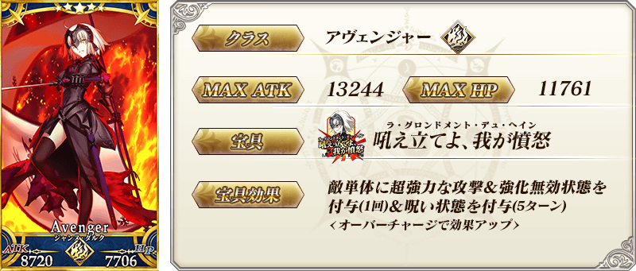
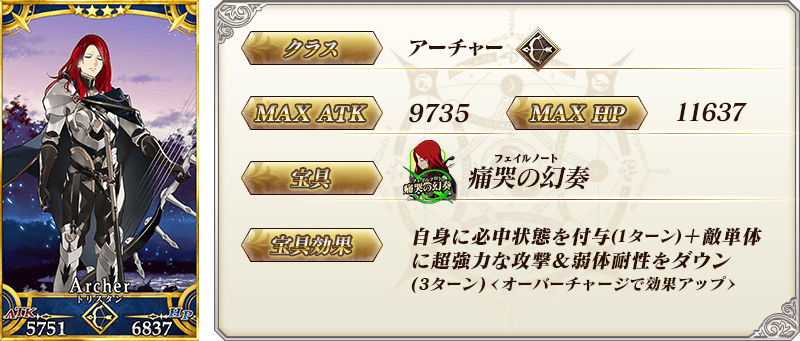
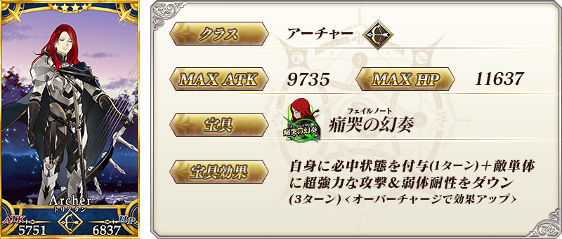
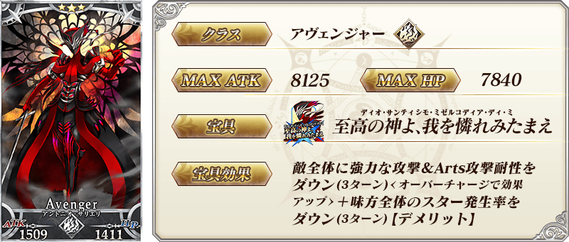
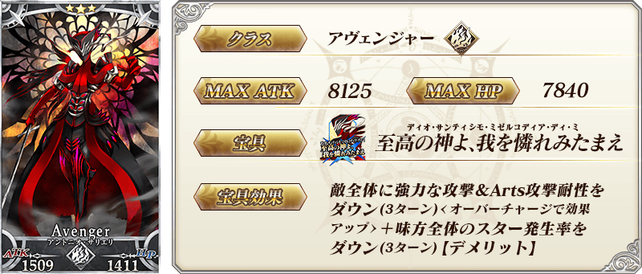

◆「困惑鳴鳳莊的考察Pick Up召喚」期間◆
期間:2019年5月15日(三) 17:00～5月29日(三) 11:59
舉辦期間限定「困惑鳴鳳莊的考察Pick Up召喚」！
從在期間限定活動「困惑鳴鳳莊的考察」出演從者之中，期間限定從者「★5(SSR)貞德〔Alter〕(Avenger)」登場！
本次在上述加上，「★4(SR)崔斯坦」「★3(R)安東尼奧・薩里耶利」的3位Pick Up！
詳情請在聖晶石召喚畫面左下的召喚詳細確認。
◆有關從者的注意◆ ※貞德〔Alter〕(Avenger)在Pick Up期間結束後不會追加到故事召喚。 ※崔斯坦、安東尼奧・薩里耶利在Pick Up期間結束後仍會在故事召喚被抽出。 ※Pick Up期間中，崔斯坦、安東尼奧・薩里耶利就算通過各章前也能入手。
Pick Up期間中，期間限定從者、Pick Up從者的出現機率提升！
10次召喚中確定1張★4(SR)以上和確定1位★3(R)以上的從者！ ※確定★4(SR)以上包含從者和概念禮裝。 ※本頁面皆為開發中圖片。會有與實際圖片相異的情況。

※上述「★5(SSR)貞德〔Alter〕(Avenger)」的卡面為靈基再臨第2階段。
 

※上述「★4(SR)崔斯坦」的卡面為靈基再臨第2階段。
 


※上述「★5(SSR)貞德〔Alter〕(Avenger)」的立繪為靈基再臨第2階段。
介紹「★5(SSR)貞德〔Alter〕(Avenger)」「★4(SR)崔斯坦」的寶具演出！
「Fate/Grand Order」在官方網站內的公告中，以影片公開寶具演出，敬請確認。
其他還有，「Fate/Grand Order 春之神秘祭2019」和期間限定活動「困惑鳴鳳莊的考察」同時舉辦！
關於詳情，請自下述橫幅確認。